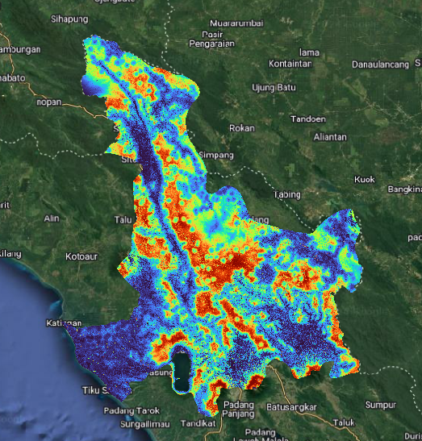
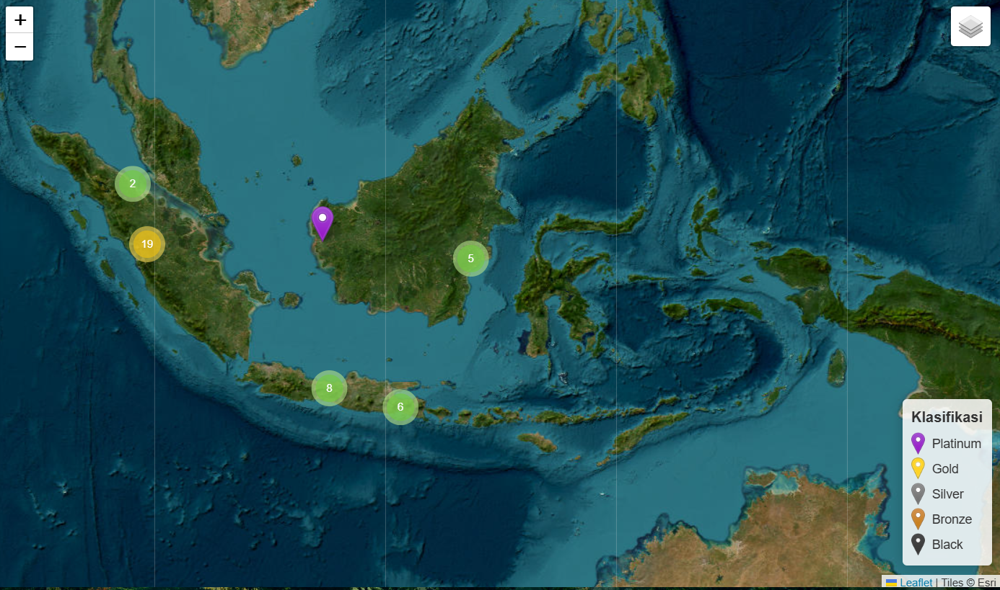
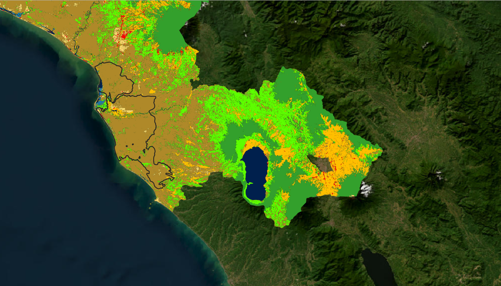
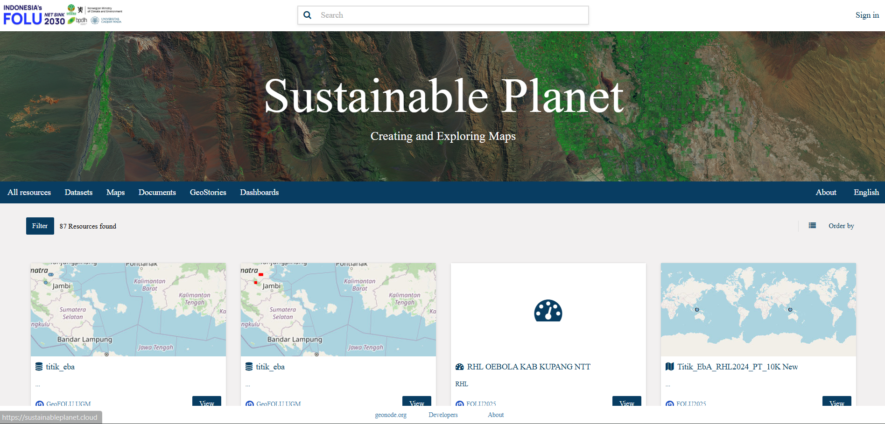
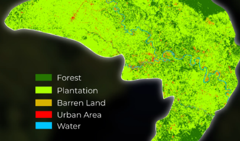
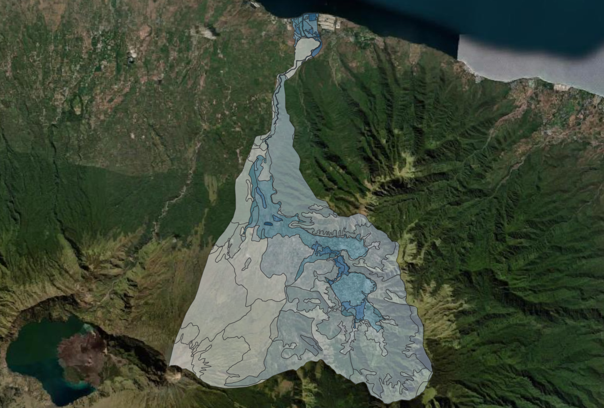

Portofolio
A collection of my work

Habitat Suitability Modelling
Predicting habitat suitability for Sambar Deer in a region of West Sumatra using Maximum Entropy.

WebGIS For EbA
Developing a WebGIS platform to track best practices across Indonesia, contributing to the achievement of the FOLU Net Sink 2030 goal.

Land Use Transformation
Using Landsat imagery and Machine Learning to monitor land Transformation patterns over three decades.

Geospatial Information Hub
Developed a geoportal to collect and manage data from FOLU Net Sink 2030 programs, facilitating integrated data analysis.

Spatial Land Analysis
Examined the regional conditions in a part of Sumatra by analyzing NDVI and land use data, providing data for policy decision.

Flash Flood Mapping
Mapped flash flood vulnerability in the Beburung Watershed, Lombok, using remote sensing approach as part of KKL 3.